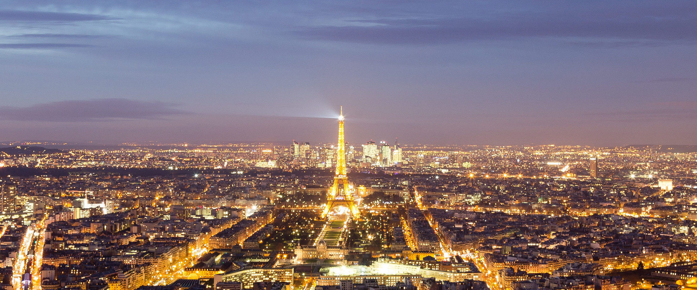

One of my main hobbies is to travel not only around the country but also around the world. I have traveled all around Europe and plan to kkep doing it until I grow old. I have travelled to a number of countries which include;
Travelling allows you to experience the cultures that other countries live in and allow you to broaden your horizons. Travelling is also a great way to meet new people that have the same interest as you in travelling the world. Travel immerses you into the lifestyle of the locals and is a great eye-opening experience which I believe everyone should experience in your lifestye. I began travelling at a very early age. I was 5 years old when I went to Stoke to attend my Uncles wedding. After that, My family and I spend a week exploring what London has to offer (Not that I remember much). I went to London again 2 years ago to meet some friends that I had met when I was doinfg a teaching course over in Spain. There, i got to explore all of what London has to offer but this time I remembered it. I stayed with friends and enjoyed every second of it.
I attended an English teaching course in the summer of 2016, and had the time of my life. I went with a company called Diverbo. 60 people attended, 30 English speaking people and 30 Spainish speaking people. There,
we stayed in a hotel in Albacete in the south of the country and spent 2 weeks together and the Anglo's taught the Spainiards how to speak English properly. I had a great time and made plenty of new friends, both English
speaking and Spaniards.
I've also gone to plenty of countries with my family as well. We've gone on plenty of holidays to France and stayed in places such as Paris, Bordeaux, Perpignan, St. Jean de Luc amongst others.
We've also more recenty gone to Spain a number of times. We stayed in Barcelona, Pals and Tarragona. I've especially enjoyed my time in Spain as I'm older and can have alot more enjoyment with my family aswell.
The weather makes it the ideal destination and the history of all the cities is very appealing to me.

By far my favourite holiday destination was switzerland.
When I was a part of the scouts, We went on a trip to Switzerland and stayed in a hotel ina place called Adelboden which was thoroughly enjoyable. We did numerous activities such as